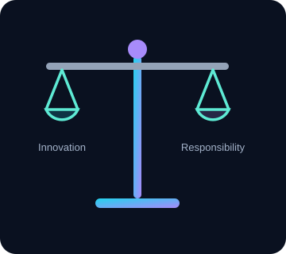

Now → 2030
Multimodal assistants (text + image + voice), AI copilots in every profession, stricter regulation such as the EU AI Act, and much better energy efficiency per model.
AI is not good or evil on its own — it amplifies the intentions (and the mistakes) of the people who build and deploy it. That makes ethics the most important chapter of this story.
Every AI deployment is a trade-off. A health model may save thousands of lives, but it needs personal medical data. A recommendation engine may delight users, but it can also trap them in filter bubbles. Self-driving cars may eventually cut accidents dramatically — yet someone must program the impossible "trolley problem" decisions.
The goal of AI ethics is not to slow innovation down. It is to make sure the benefits are shared widely, the risks are understood honestly, and the people affected by AI systems have a voice in how they are designed.

Generative models can now write essays, pass exams and create photorealistic images of people who never existed. Misused, they power scams, non-consensual fake imagery and large-scale disinformation.
A realistic (not science-fiction) look at where the research is heading.
Multimodal assistants (text + image + voice), AI copilots in every profession, stricter regulation such as the EU AI Act, and much better energy efficiency per model.
Possible early general-purpose systems, AI scientists accelerating materials and medicine, brain-inspired architectures, and humanoid robots entering factories and homes.
Will we reach AGI? Who owns model outputs? How do we verify truth online? Can alignment be guaranteed? These keep researchers — and this website — busy for years.
"The real risk with AI isn't malice but competence." A system that is very good at the wrong goal is far more dangerous than a simple one that means harm.
— Paraphrasing Stephen Hawking, on the future of artificial intelligence
Have an opinion about AI? We would love to hear your questions, project ideas or counter-arguments.